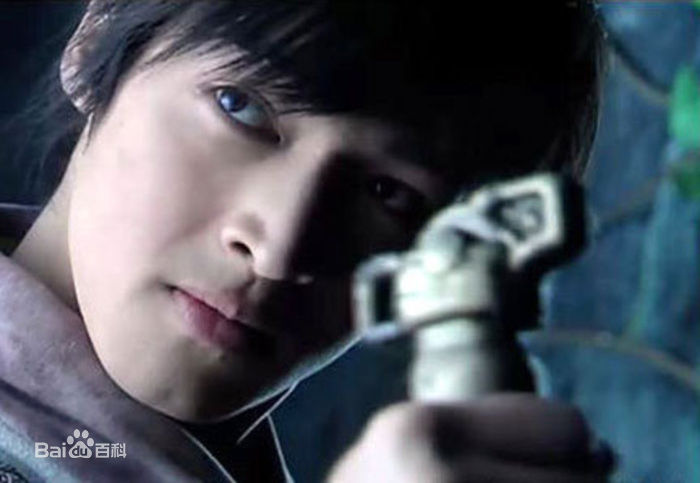
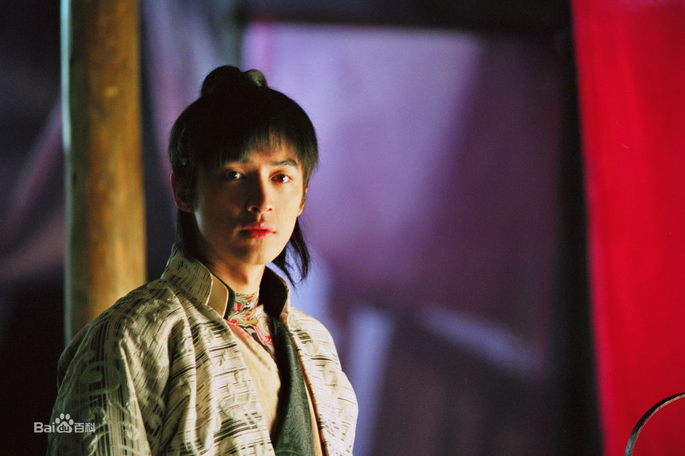
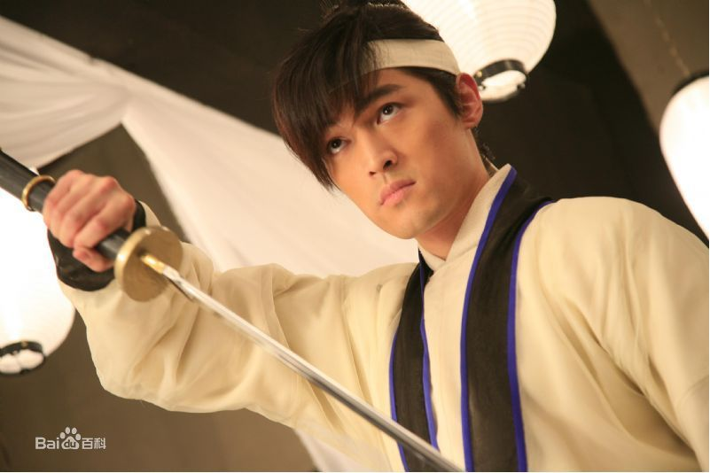
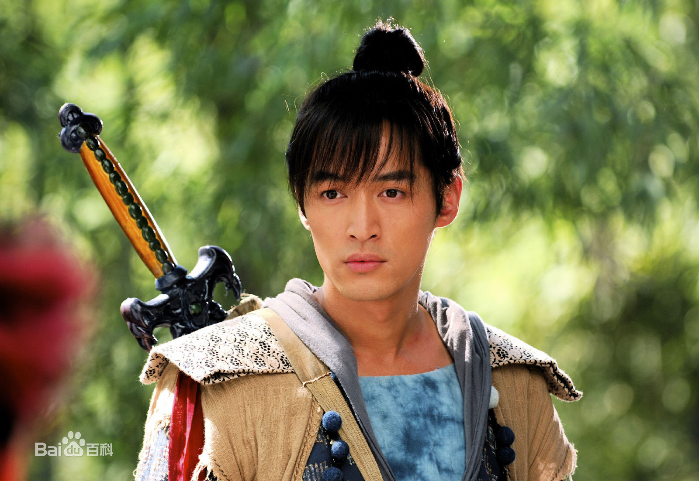
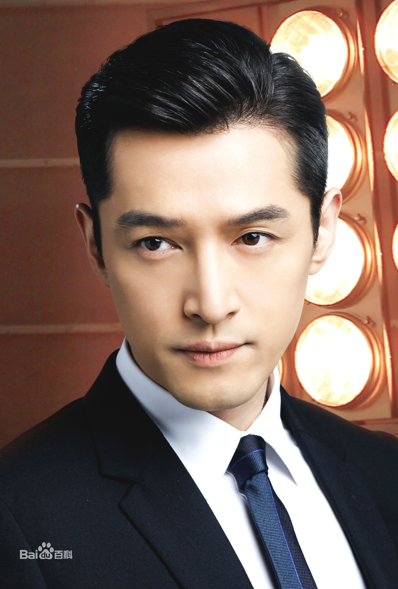

胡歌，1982年9月20日出生于上海市徐汇区，中国内地演员、歌手、制片人。
1996年，14岁的胡歌便成为上海教育电视台的小主持人，2005年毕业于上海戏剧学院表演系，
同年在仙侠剧《仙剑奇侠传》中塑造了“李逍遥”一角，
并演唱该剧插曲《六月的雨》《逍遥叹》 [1-2] 。

2006年8月遭受严重车祸，2007年6月复出 [3] 。

2009年主演仙侠剧《仙剑奇侠传三》 [4] 。

2010年主演的穿越剧《神话》在央视八套播出 [5] 。

2011年参演历史题材电影《辛亥革命》并提名大众电影百花奖“最佳新人奖” [6-7] 。
2012年主演玄幻剧《轩辕剑之天之痕》刷新周播剧收视纪录 [8] 。
2013年主演两部话剧，并凭借《如梦之梦》获得北京丹尼国际舞台表演艺术奖“最佳男演员奖” [9]。
2014年参演战争剧《四十九日·祭》并凭该剧提名上海电视节白玉兰奖“最佳男配角奖” [10-11] 。
2015年主演的谍战剧《伪装者》、古装剧《琅琊榜》、都市剧《大好时光》在各卫视相继播出，
先后获得亚洲电视剧研讨会“亚洲特别贡献奖”、 国剧盛典“最佳男演员奖”、 中国电视剧飞天奖“优秀男演员提名奖”、
上海电视节白玉兰奖“最佳男主角奖”、
中国电视金鹰奖“观众喜爱的男演员奖”、中国金鹰电视艺术节“最具人气男演员奖”等奖项 [12-17] 。
2016年成为上海旅游形象大使， 并在央视春晚演唱歌曲《相亲相爱》 [18-21] 。
2017年第二次登上央视春晚演唱歌曲《在此刻》，
并获得共青团中央“全国向上向善好青年”崇义友善好青年称号，主演的都市剧《猎场》在湖南卫视首播。
